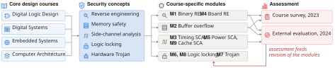

A1
Security education for all
Core design courses are required. The material reaches students who would never enroll in a hardware security elective, and it trains the faculty who already teach those courses.
Method
A security module stays in a core course only when the lab requires a concept that course already teaches. A topic that needs a new instrument, a new instruction set, or a cipher the course does not cover belongs in a separate course.

A core course supplies the design topic. A security topic is attached to that topic, and the result is a module for that course. Only some modules have survey results. M1 through M4 are embedded systems. M5 through M8 are digital logic. M9 is computer architecture.
A1
Core design courses are required. The material reaches students who would never enroll in a hardware security elective, and it trains the faculty who already teach those courses.
A2
An implementation attack is clearer beside the circuit, the instruction set, or the calling convention that produces it.
A3
There is no new course to staff, equip, and defend in a curriculum committee. The same placement rules can later carry other topics a program needs, such as machine learning at the edge.
The security topic is chosen because the lab requires a design concept already on the syllabus. How well known the attack is in the research literature does not decide the choice.
The module uses tools the laboratory already owns and the course already teaches: the debugger, the vendor IDE, a logic analyzer, a multimeter. A new instrument is what keeps another department from adopting the module.
M2 asks the student to repair the overflow on a machine that has no stack canary and no address-space layout randomization. M3 measures a constant-time comparison again on the same logic analyzer. M6 and M8 have the student build the lock. M1, M4, and M5 end with no countermeasure, and the materials say so.
The module is placed in the week the course covers the concept the lab uses. A security lab that comes after that unit’s exam no longer reinforces the design topic.
Some labs need more time than one period. Keep the measurement in the lab. Identifying parts, reading a trace, and interpreting a waveform can be finished afterward. In every surveyed class, students asked for worked examples and time. They did not ask for new equipment.
| Security concept | Where the threat starts | Modules |
|---|---|---|
| Reverse engineering | Field | M1, M4 |
| Side-channel analysis | Field | M3, M5, M9 |
| IP protection and obfuscation | Supply chain | M6, M8 |
| Hardware Trojan | Supply chain | M7 |
| Memory safety | Outside field and supply chain | M2 |
The nine modules do not cover fabrication-time threats, physical unclonable functions, bus snooping, fault injection, or gate-level and device-level reverse engineering. Device-level reverse engineering needs decapsulation and imaging. That needs equipment the course does not already have, so it is out. A semester holds at most three modules. The catalog is a set of choices, not a full syllabus.
Fault injection on a cryptographic core needs a clock glitcher, a device with a crypto accelerator, and a lecture on the cipher. None of that is in a first embedded-systems course, so the topic stays out of these modules. The same test rejected any module that would require a new instrument.
This work was supported in part by the U.S. National Science Foundation (NSF) Secure and Trustworthy Cyberspace (SaTC) program under Award No. 2114157.
Any opinions, findings, and conclusions or recommendations expressed in this material are those of the authors and do not necessarily reflect the views of the U.S. National Science Foundation.
The project is a collaboration of the University of Kansas, the University of Florida, and Florida International University.